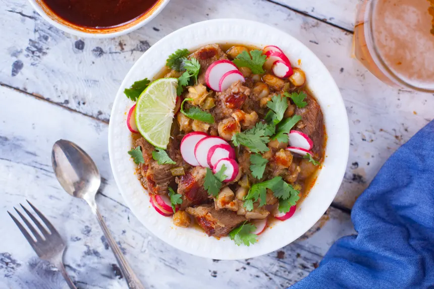

Pozole Rojo

Description
Ingredients
- 1 1⁄2 lbs pork shoulder
- 2 garlic cloves, peeled
- 1 tablespoon cumin powder
- 1 onion, chopped
- 2 tablespoons oil
- 1⁄2 teaspoon black pepper
- 1⁄2 teaspoon cayenne
- 2 tablespoons california chili powder
- 1 tablespoon salt
- 1⁄4 teaspoon oregano
- 4 cups canned white hominy, drained and rinsed
- 3 -5 cups pork broth, from cooking pork shoulder
- 1 cup canned diced green chilis (optional)
- 2 whole fresh jalapenos, chopped (optional)
- whole ancho chilies, seeded and stemmed (garnish) (optional)
Steps
- Prepare the onion, peel the garlic, chop the onion, peel and chop the 2 garlic cloves, chop the green chilies and jalapenos if you are using them and get the hominy drained and rinsed.
- I boil my ancho chilies in a separate small pot for the garnish part(read below).
- Now you are ready to cook.
- Place the meat in a large saucepan and just cover with lightly salted water.
- Add 1/2 chopped onion, the 2 cloves peeled garlic, pepper, cumin, and oregano.
- Bring to a boil over medium heat, skim off any foam that rises, reduce heat, cover and simmer for 45 minutes.
- Remove meat and broth, reserving both.
- Saute the remaining chopped onion and garlic in oil until translucent.
- Add the remaining spices, stir for a minute.
- Cut the reserved pork into 1 inch cubes and add to the pan.
- Stir in the canned hominy, pork broth (if there is not enough pork broth, add chicken stock, I like to add it anyway for flavor, about 2-4 cups, eyeball the amount you like), green chilies and jalapenos (optional).
- Cook at a simmer, covered, for 45 to 60 minutes until the meat and hominy are tender.
- If necessary, cook for up to an additional 60 minutes until the chilies and onions are well blended into the broth.
- Degrease the stew, taste for salt, and serve in soup bowls.
Garnishes
- Lemon
- Sliced Radishs
- Chopped Cilantro
- Corn Tortillas
Red Salsa
When my ancho chilies are soft from boiling(takes about 15 minutes),
then i put them in the blender with 1 1/2cups of water, 1 clove of garlic and about
2 tablespoons diced onion, and about 1 tablespoons of salt and pepper. I blend this thin,
then strain it to get the liquid separated from its "pulp". I throw the pulp into the soup for the
flavor i like but you can discard if too spicy for you. The remaining liquid you put in a serving dish
for guests to add in their own bowl, if desired. Beware! It's HOT!